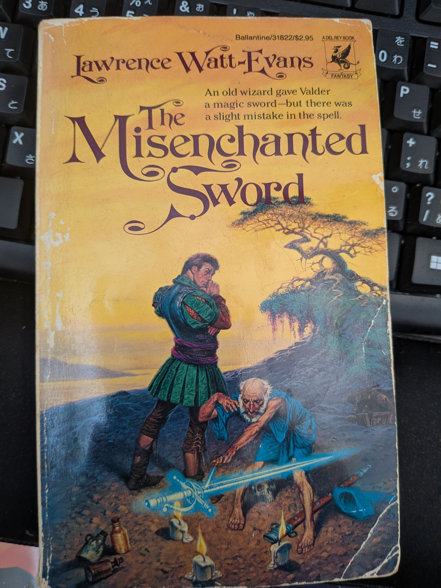
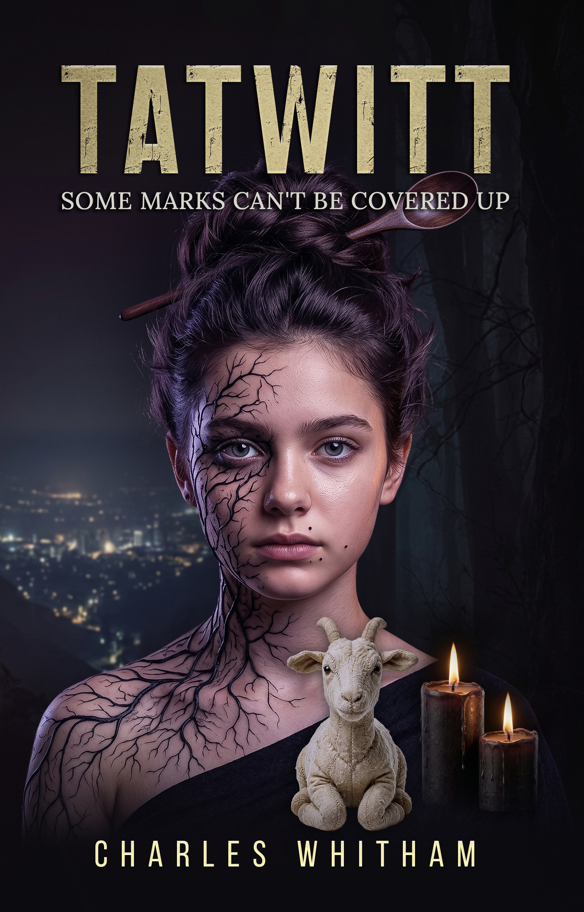
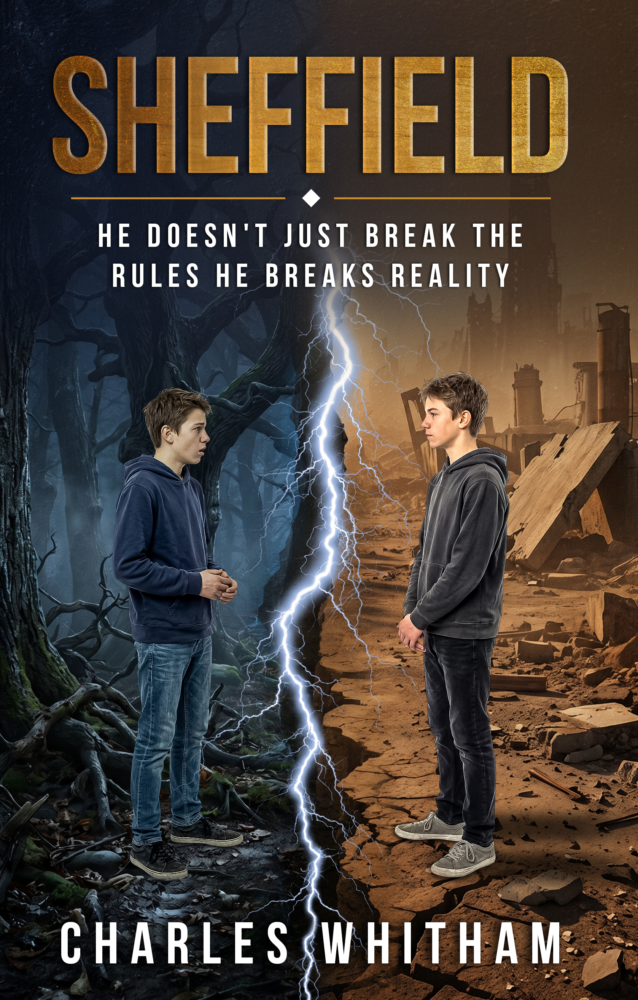
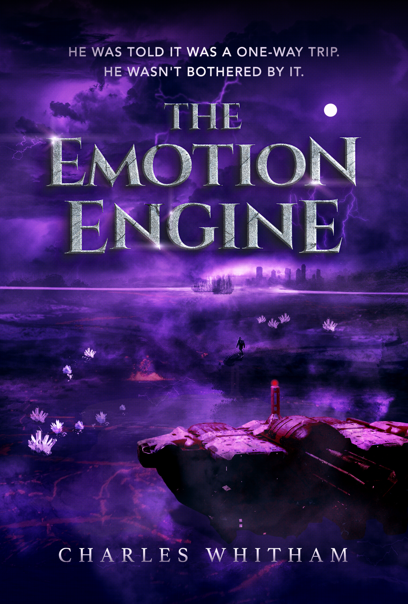

My third novel comes out in fifteen days. Before it does, I want to let you in on something I've been doing since the second one.

Years ago, one of my best friends and I shared an apartment next to a grocery store. That store had a big section of books, and once a week we'd walk over, buy a new novel, read it that week, and then talk about it. We were both bass players and neither of us watched much TV, so books were how we fed our imaginations.
That's how I found Lawrence Watt-Evans. I loved the way he wrote. His tone and his style felt fresh, like nothing else I was reading. And his worldbuilding made me jealous. I was a D&D Dungeon Master, and here was a guy coming up with ideas I had never thought of. Not one or two, either. Half of them.
I followed his Ethshar series all the way through and read every one of them. These days I'm working my way through some of his other books.
Here's the funny part. Back then, I never once thought about writing a novel. I was determined to make it in music. It took years before I sat down to write fiction, and it took even longer to see how much of what I do came from those weekly trips to the grocery store. Today, Watt-Evans is my biggest influence.
A Seed in Tatwitt

I was in the middle of writing Tatwitt when I got the idea to slip in a small easter egg that tied it back to Sheffield. It felt natural, so I did it.
Only afterward did I realize where the idea came from. It was Watt-Evans. That is exactly the kind of thing he does.
After that, I started paying attention. I began looking for places in each story where I could plant a seed, something small that could grow into another book later. I'm a lot more deliberate about it now than I was that first time. But I still try to keep every connection as natural as the first one felt, so it belongs in the story whether you catch it or not.
Stay for the Credits

I write every book as a standalone. Each story is self-contained. You don't need to read Sheffield to understand Tatwitt, and you don't need either one to read The Emotion Engine. Start with whichever one grabs you.
But each book gets better when you've read another one.
Think about the Marvel movies. Once you learn there's a short scene after the credits, you never walk out early again. You sit there until the last name scrolls by. Or think about the hidden tracks bands used to put at the end of an album. You'd let the CD keep playing through the silence, just in case.
That's what I want my books to be like. So I'm not going to tell you where the connections are. They're there. Go find them. I made them fairly easy to spot if you know to look, and once you figure out what I'm doing, the rest get easier.
One reader already has. He found the one in Tatwitt and told me he smiled when he realized what it was. That's the connection I'm proudest of, so hearing that meant a lot. Later he beta read The Emotion Engine and caught another one before almost anybody else had even seen the book.
More Seeds in the Ground
The universe isn't finished. The next two books are already planned, and the connections between them have been plotted out. I'm not ready to share titles yet. Just know that some of those seeds are already planted.
In the end, I just want you to be entertained. I want you to close one of my books feeling like I respected the time you gave it, and like you got something a little different from what's on the rest of the shelf. If you find a hidden connection along the way, think of it as the scene after the credits.

The Emotion Engine comes out November 23 on Kindle, with the paperback following on November 25. If you haven't read Sheffield or Tatwitt yet, you've got two weeks to start looking.
—Charles